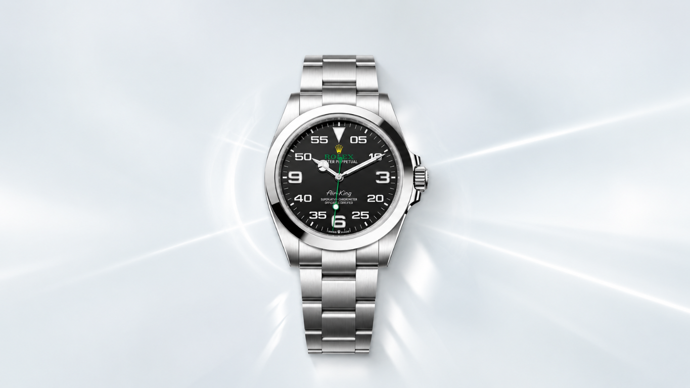

AIR-KING
Air-King Oyster 40 mm
Oystersteel · black dial with prominent minutes scale · Oyster bracelet
Reference only View attributed detail stateOriginal Venturo editorial framing for a Rolex reference family associated with aviation-oriented legibility. This is research coverage, not Venturo inventory.
Rolex’s India family page presents an Air-King with a 40 mm Oystersteel case, black dial and prominent minutes scale. The family page also links crown guard, self-winding mechanism, precision and Oyster bracelet features.
Exact current model reference, price and reusable photography are not established in this project. The page therefore keeps the model reference-only and does not offer a purchase action.
Rolex-attributed family-page description. The supplied reference photograph is shown below; exact reference remains unverified.

Oystersteel · black dial with prominent minutes scale · Oyster bracelet
Reference only View attributed detail state